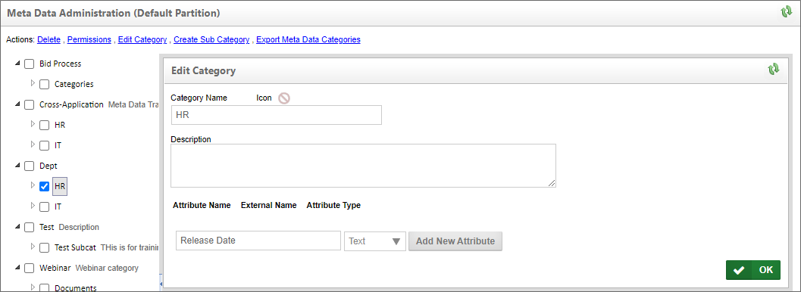

The Meta Data Administration section, which is separate from the IT Admin section, enables you to configure the category hierarchy for this partition. Each category can have attributes that contain variable data. A category can be assigned to any object in the partition (i.e. document, form, and workflow). For more information about creating and using Meta Data, please refer to the Meta Data topic in the Implementer's Guide, which covers the use of the Meta Data Administration section in detail.

A button that links to the Meta Data Administration section can be added to any administrative workspace via adding it from the Top Navigation Buttons tab of the Workspace's properties page.
When navigating to the Partition Data Configuration section you will see various links that provides the Partition Data Configuration functions that you will need in order to administer your Process Director Server. You will notice a dropdown that has all partitions listed. Here you will select the partition you would like to administer. You can choose from the list of configurations.